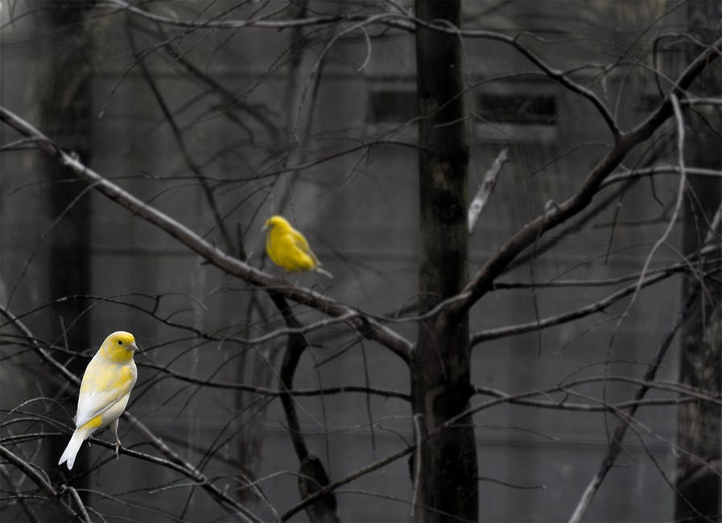

Here you will find our blog, populated by several of our very own BirdSpotters staffers. This is where we post our findings after our monthly outings.
Each meeting, we try to travel to a new location within Michigan. During the winter months we schedule a trip to a southern region, as our classes take a break and the birds fly south. Enjoy, and direct any questions or feedback to our Contact Us page!
March 2018
Back in Michigan, but spring has not yet sprung in full. Instead, many trees are still bare and the birds are scarce. I couldn't find a single noteworthy shot this month. Luckily, one of our BirdSpotter students shot these perching birds a few days ago. They look about as confused about the weather as I feel.
-V

Titled: Michigan Springtime
Feb 2018
Ah, the Turaco. Literally translated "banana-eater", largely thought of as a "go-away" bird for the populus of South Africa. As their name suggests, turacos enjoy bananas and can become so tame as to be hand-fed. This close-up encapsulates the beauty of the eye detail- those bright orange ridges inside the pale green.
-V
Titled: Up Close & Personal
Jan 2018
The beauty of Europe! We took a little detour this month to sight-see, but didn't forget to stop for the birds. Although it's hard to see in the jumble, here's a list of all the bird species in this picture. See if you can spot them out!
-V
Swan
North American Seagull
Europeon Black-Headed Seagull
Rock Pigeon
Titled: Urban Birdwatching
Dec 2018
We have arrived! Touching down in the middle of the continent of Africa, we plan to make the entire circuit in just a few months. No sleigh bells to be found in these jungles.. Although this picture still gives me a sense of holiday spirit. Is it the green and red of the rose-ringed parakeet? Or those juicy berries in its maw, which has the distinct look of holly typically strung by the fireplace?
It's been looking less and less like Christmas, but these parakeets are so social it feels like santa's present to the BirdSpotters. This little guy didn't even flinch when the camera came up close. It was as though he were inviting us to watch him enjoy his meal(and it is a "he"- as shown by the colors).